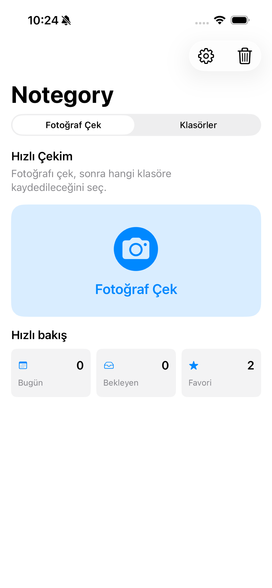
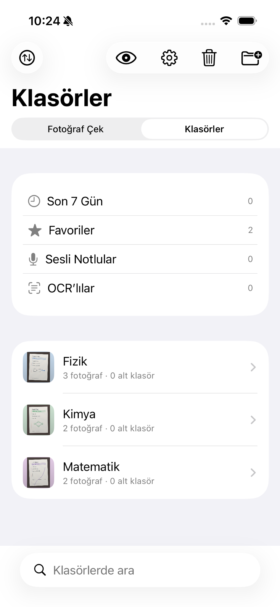
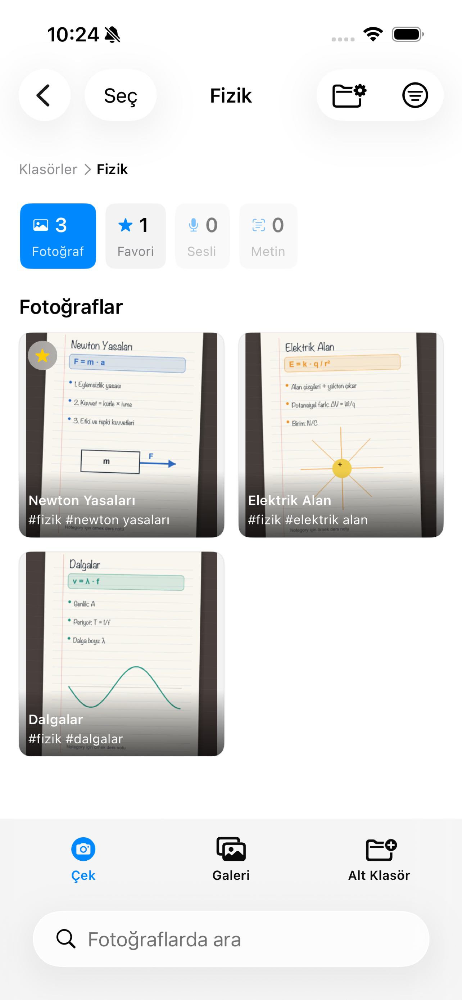

Notunu çek
Tahta, kitap veya çalışma kâğıdının fotoğrafını uygulama içinden çek.
Ders notu uygulaması
Notunun fotoğrafını çek, doğru ders klasörüne kaydet ve ihtiyacın olduğunda saniyeler içinde aç.
Ücretsiz indir. Uygulama içi reklamlarla desteklenir.

Fotoğraf çek
Dersine kaydet
Hemen bul
Üç adım
Tahta, kitap veya çalışma kâğıdının fotoğrafını uygulama içinden çek.
Fizik, Matematik veya kendi oluşturduğun klasöre hemen kaydet.
Galeride uzun uzun aramadan doğru nota yeniden ulaş.
Gerçek uygulama ekranları
Klasörler, ayrıntılı görüntüleme, sesli not, gizli mod ve geri dönüşüm özellikleri aynı uygulamada.


Daha fazlası
Kısa cevaplar
Evet. Notegory ücretsiz bir iPhone uygulamasıdır ve uygulama içi reklamlarla desteklenir.
Klasörlerin, seçtiğin veya çektiğin fotoğraflar, sesli notların, etiketlerin ve uygulama ayarların normal kullanımda cihazında saklanır.
Notegory şimdi iPhone için App Store’da. App Store sayfasından ücretsiz indirebilirsin.
Gizlilik
Notegory’nin veri kullanımı ve reklam tercihleri hakkında açık bilgi edin.
Şimdi iPhone’da